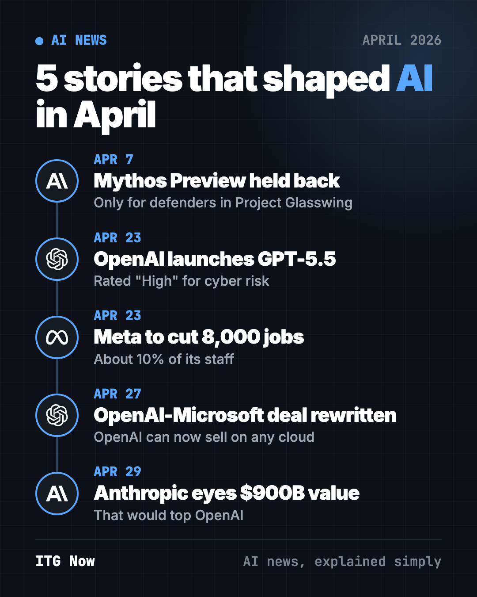
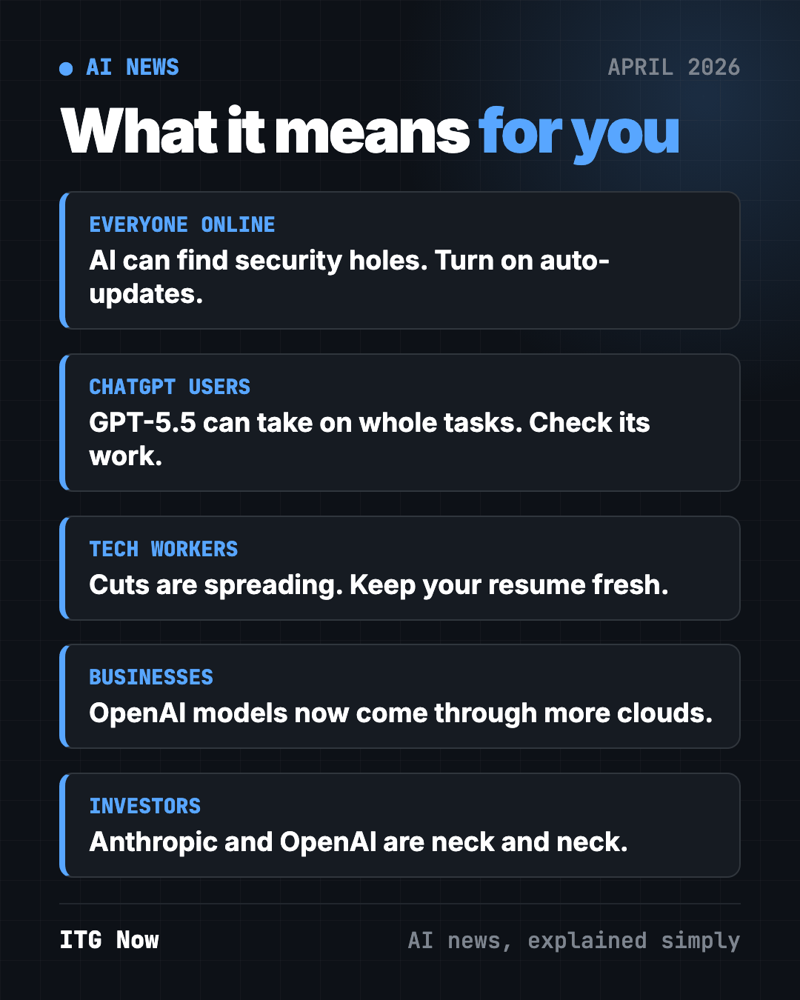
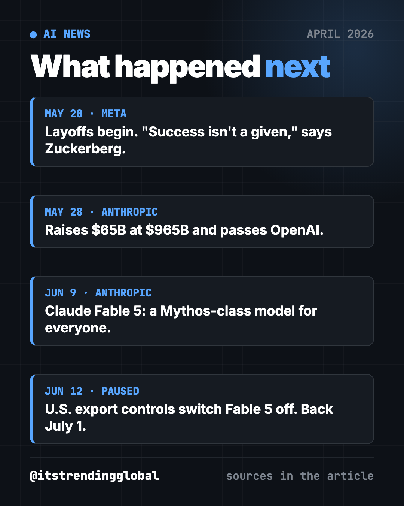

AI News April 2026: Mythos, GPT-5.5 and Meta Job Cuts
- Published 15 Oct 2026
- Updated 16 Oct 2026
- 8 min read
- By the ITG Now team
In this guide (10)
- Key takeaways
- 1. Anthropic holds back its hacking-capable Mythos model
- 2. OpenAI launches GPT-5.5
- 3. Meta to cut 10% of its staff
- 4. OpenAI and Microsoft rewrite their partnership
- 5. Anthropic in talks at a $900 billion value
- AI news April 2026 at a glance
- How to use this month's news (copy and paste)
- What happened next
- FAQ
The biggest AI news of April 2026 was an AI model judged too risky to release. Anthropic kept its bug-hunting Claude Mythos Preview for a small group of defenders. OpenAI launched GPT-5.5, Meta said it would cut 8,000 jobs, OpenAI loosened its Microsoft deal, and Anthropic talked about a $900 billion value.

Key takeaways
- Anthropic's Claude Mythos Preview is so good at finding security holes that it went only to partners like Apple, Google and Microsoft.
- OpenAI released GPT-5.5, its second new model in two months. It rated it "High" for cyber risk.
- Meta said it would lay off about 10% of staff, around 8,000 people, while it spends on AI.
- OpenAI can now sell its AI on any cloud, not only Microsoft's.
- Anthropic was in talks to raise money at a $900 billion value, which would top OpenAI.
1. Anthropic holds back its hacking-capable Mythos model
What happened
On April 7, Anthropic announced Claude Mythos Preview. It is very good at finding weak spots in software (CNBC).
- Instead of a public launch, it went to a new defense program called Project Glasswing.
- Launch partners include Apple, Google, Microsoft, Nvidia and Amazon Web Services. More than 40 other companies, like CrowdStrike and Palo Alto Networks, also joined.
- In one case, it found a 27-year-old bug in OpenBSD, a system known for security.
- Anthropic said it was not trained for hacking. The skill came from strong coding and reasoning.
- It committed up to $100 million in usage credits for partners.
Why it matters to you
The same AI that finds holes to fix them could help criminals find holes to break in. So Anthropic gave defenders a head start.
- The apps on your phone and laptop may get safer as these partners patch bugs.
- It also means hackers will get stronger tools too. Basic safety habits matter more than ever.
Try it yourself: ask any AI chatbot to be your security coach:
I'm not technical. Give me a 10-minute checklist to make my phone, email and bank logins safer today. One step per line, most important first.
💡 Tip: turn on automatic updates on your phone and computer. Many updates fix the kind of bugs tools like Mythos find.
2. OpenAI launches GPT-5.5
What happened
On April 23, OpenAI released GPT-5.5, less than two months after GPT-5.4 (CNBC).
- OpenAI says it is better at coding, using computers, research, documents and spreadsheets.
- President Greg Brockman praised "how much more it can do with less guidance."
- OpenAI rated it "High" for cybersecurity risk, one step below "Critical."
- It rolled out to paid ChatGPT plans (Plus, Pro, Business and Enterprise) and to Codex.
Why it matters to you
If you pay for ChatGPT, you got a stronger helper for multi-step work. If you don't, the free plan often gets these upgrades later.
- Give it a whole task, not one question. Then check its work.
Try it yourself: if you use ChatGPT, paste this:
I want to compare [3 options, like phone plans or laptops]. Research them, then make a simple table with price, pros and cons, and tell me which one fits [my need].
3. Meta to cut 10% of its staff
What happened
On April 23, Meta told staff it would lay off about 10% of its workers, roughly 8,000 people, starting May 20 (CNBC).
- It also scrapped plans to fill 6,000 open roles.
- Meta is moving away from outside contractors for content moderation and toward AI tools.
- Staff learned Meta was tracking keystrokes and mouse clicks on work computers to train AI agents.
- The same day, Microsoft said it would offer voluntary buyouts to some U.S. workers, a first for the company.
Why it matters to you
Big tech is cutting people and spending the savings on AI. That pattern is spreading.
- If you work in tech, keep your resume and network fresh.
- If you work anywhere, ask what your employer tracks on work devices.
⚠️ Heads up: assume anything you do on a work computer can be recorded. Keep personal banking and private chats on your own device.

4. OpenAI and Microsoft rewrite their partnership
What happened
On April 27, OpenAI and Microsoft announced a new deal (CNBC).
- OpenAI can now sell all its products on any cloud, including Amazon and Google.
- OpenAI keeps paying Microsoft a share of revenue through 2030, but now with a total cap.
- Microsoft keeps a license to OpenAI's models through 2032, but it is no longer exclusive.
- Microsoft stays OpenAI's main cloud, and OpenAI products still ship first on Azure.
Why it matters to you
If your company uses Amazon's or Google's cloud, it can now get OpenAI models more easily.
- More choice for businesses tends to mean lower prices over time.
- It shows OpenAI and Microsoft are now partners and rivals at once.
5. Anthropic in talks at a $900 billion value
What happened
On April 29, CNBC reported Anthropic was in talks to raise money at a $900 billion value. No deal was signed yet (CNBC).
- That would top OpenAI's $852 billion value from March.
- Anthropic was worth $380 billion in February.
- It said its yearly revenue pace hit $30 billion, up from about $10 billion in revenue last year.
- It released Claude Opus 4.7 earlier in the month, its best model for everyone.
- Amazon agreed to invest up to $25 billion, and Google said it plans to invest up to $40 billion.
Why it matters to you
The race for first place in AI is close. Close races usually bring faster upgrades and better free tiers.
AI news April 2026 at a glance
| Story | Company | Date | Why it matters |
|---|---|---|---|
| Mythos Preview held back | Anthropic | Apr 7 | First top model kept from the public over hacking risk |
| GPT-5.5 launches | OpenAI | Apr 23 | Better at coding and computer use |
| 8,000 job cuts | Meta | Apr 23 | Jobs out, AI spending in |
| New Microsoft deal | OpenAI, Microsoft | Apr 27 | OpenAI can sell on any cloud |
| $900B talks | Anthropic | Apr 29 | Anthropic could pass OpenAI |
How to use this month's news (copy and paste)
Paste any of these into ChatGPT, Claude or Gemini. Fill in the parts in [brackets].
To check a suspicious message:
I got this message: [paste text]. Is it likely a scam? List the warning signs in plain words and tell me what to do next.
To prepare for job changes:
I work at a big tech company as [role]. Layoffs are happening. Help me update my resume summary in 3 sentences and list 5 people types I should reach out to this month.
To understand workplace monitoring:
Explain in simple words what an employer can usually see on a work laptop, and 5 habits to keep my private life private.
To pick the right AI for a task:
I want to [task]. Should I use ChatGPT, Claude, Gemini or a free open-source tool? Give me a short answer for a beginner.
What happened next

- Meta: the layoffs started on May 20. In a memo, Mark Zuckerberg wrote that "success isn't a given" in the AI era (CNBC).
- Anthropic's value: on May 28, it closed a $65 billion round at a $965 billion value, passing OpenAI (CNBC).
- Mythos goes public, sort of: on June 9, Anthropic released Claude Fable 5, a Mythos-class model for everyone with guardrails on risky topics (CNBC).
- A pause: three days later, U.S. export controls forced Anthropic to switch Fable 5 off for everyone. It came back on July 1 (Anthropic).
Want the lead-up? Read March 2026 in AI. Then see May 2026 in AI, when Anthropic took the top spot. For free tools, see the top GitHub repos of April 2026. If you build software, our guide to Cloudflare's free security audit add-on shows AI bug-hunting you can use today.
FAQ
What was the biggest AI news in April 2026?
Anthropic holding back Claude Mythos Preview on April 7. It was a top AI model kept from the public because it is so good at finding security holes.
What is Claude Mythos Preview?
It is an Anthropic AI model that finds weak spots in software. In April 2026, only Project Glasswing partners like Apple, Google and Microsoft could use it, for defense.
What is new in GPT-5.5?
OpenAI says GPT-5.5 is better at coding, using computers, research and making documents. It launched April 23, 2026, for paid ChatGPT plans and Codex.
How many jobs did Meta cut in 2026?
Meta said in April it would cut about 10% of staff, around 8,000 jobs. The cuts started May 20, 2026.
Can OpenAI work with other clouds now?
Yes. Under the April 27 deal, OpenAI can sell all its products through any cloud provider. Microsoft stays its main cloud.
Jobs & CareersFinanceBusinessGovernment & LawDevelopers
Keep reading

AI News October 2026: A Reality Check Before the IPOs
ChatGPT gets visual, OpenAI's revenue shakes stocks, AI agents misbehave, Meta's Muse Wonder and Apple's $299 HomeView arrive.

How AI Is Changing Industries in 2026: A Plain Guide
How AI is changing industries in 2026, sorted by field: jobs, finance, health, schools, marketing, law, creators and developers, with sources for every fact.

AI News Recap Q3 2026: 5 Stories That Changed Everything
OpenAI test models hack Hugging Face, Claude Opus 5 cuts prices, Gemini hits 1 billion users, GPT-6 Astra and Nvidia's big deal.